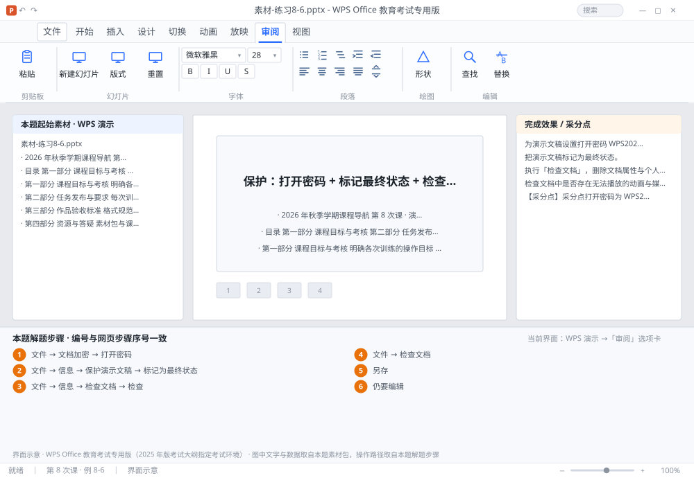

完成比对文档 · 例 8-6
保护：打开密码 + 标记最终状态 + 检查文档 + 兼容性 ｜ 第 8 次课 / WPS 演示 ｜ 网页：实操-演示2.html ｜ 考试环境：WPS Office 教育考试专用版（2025 年版考试大纲指定考试环境）
用途 本页按修订后的题目要求与解题步骤生成，是交卷自查的结果基准：
逐项列出每一步应出现的可复核结果，配合模拟操作截图与解题结果文件使用。
它不是素材包的一部分，不会预置答案动作；起始素材仍从本题素材包下载。
一、本题起始素材包
目录：练习素材/练习8-6-文档保护与检查/ ｜
下载包：练习素材/下载/练习8-6-文档保护与检查.zip
二、题目要求
- 为演示文稿设置打开密码 WPS2026。
- 把演示文稿标记为最终状态。
- 执行「检查文档」，删除文档属性与个人信息、删除批注。
- 检查文档中是否存在无法播放的动画与媒体（确认所用对象均为教育考试专用版支持的类型）。
- 把文件另存为 学号-姓名-练习8-6.pptx，并保持密码。
- 重新打开文件，验证需要输入密码。
三、解题步骤（编号与下方核对表、截图编号一致）
- 设打开密码。「文件」→「文档加密」→ 在「打开密码」里输入 WPS2026 → 确定 → 再输一次 → 保存。
- 标记最终状态。「文件」→「信息」→「保护演示文稿」→「标记为最终状态」→ 确定。文件变为只读，顶部出现「已标记为最终状态」提示条。
- 检查文档。「文件」→「信息」→「检查文档」→「检查」→ 在结果列表里逐项点「全部删除」（文档属性、个人信息、批注、修订）→ 关闭。
- 查文档。「文件」→「检查文档」→ 按提示检查隐藏信息与辅助功能，确认没有依赖在线资源或新版专属效果。记下检查结果。
- 另存。F12 另存为 学号-姓名-练习8-6.pptx，密码会随文件一起保留。
- 验证。关闭文件 → 重新打开 → 应弹出密码输入框；输入 WPS2026 后可编辑（单击提示条上的「仍要编辑」可解除只读）。
四、完成效果 / 采分点
采分点打开密码为 WPS2026 且保存后仍生效 · 已标记为最终状态（只读提示条） · 检查文档已删除个人信息与批注 · 已执行兼容性检查 · 文件另存名称正确
五、逐项完成核对表
| 步骤 | 关键操作路径 | 应出现的结果（可复核） |
|---|
| 1 | 设打开密码 | 「文件」、「文档加密」、「打开密码」、PS2026 |
| 2 | 标记最终状态 | 「文件」、「信息」、「保护演示文稿」、「标记为最终状态」、「已标记为最终状态」 |
| 3 | 检查文档 | 「文件」、「信息」、「检查文档」、「检查」、「全部删除」 |
| 4 | 查文档 | 「文件」、「检查文档」 |
| 5 | 另存 | F12、学号-姓名-练习8-6.pptx |
| 6 | 验证 | PS2026、「仍要编辑」 |
六、模拟操作截图

界面示意 · WPS Office 教育考试专用版 · 橙色编号与本题解题步骤序号一致；
图中文字与数据取自本题素材包，功能入口取自本题解题步骤。
核对方法：按网页解题步骤完成并另存自己的成稿后，逐行比对本表第 3 列的
参数、公式、区域、文件名与对象数量；再对照网页「完成效果 / 采分点」检查版式是否一致。